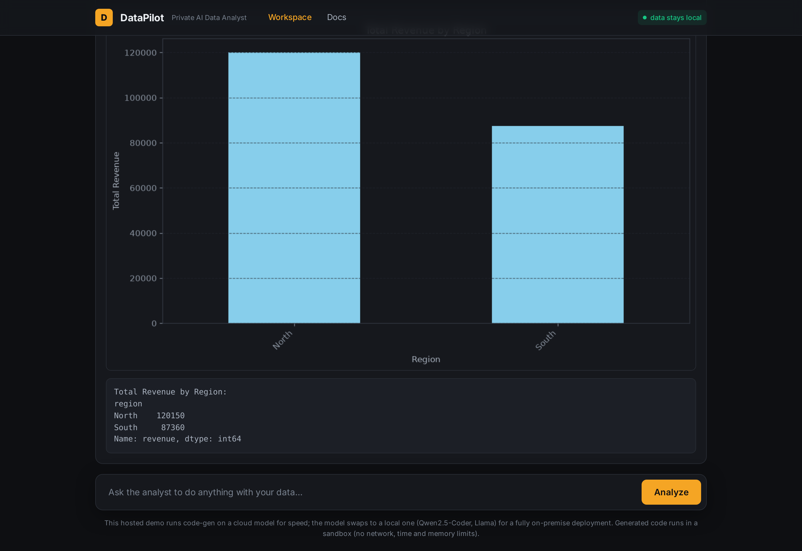

DataPilot -- Private AI Data Analyst¶
Status: Live demo Demo: datapilot.robiriu-dev.my.id (Docs)

Executive Summary¶
A self-hostable "code interpreter" for data analysis. The user describes what they want in plain English; DataPilot writes the Python to preprocess, analyse and visualise the data, runs it in a sandbox, and returns a report (charts, printed results, and the exact code it ran), which the user refines by prompting further.
It is built for organisations that cannot send data to a cloud AI. The numbers are produced by code running locally, and the model that writes the code can be a small local model (via Ollama), so raw data never leaves the machine -- it can be fully on-premise and air-gapped.
How it works¶
request + data ─► AI writes Python (sees only column names, types, a 5-row sample)
│
▼
sandbox runs it against the FULL data, locally
(no network, time + memory limits) ──on error──► AI fixes ─► retry (x3)
│
figures + printed output + the code ─► report
│
user refines by prompting (history-aware)The split is deliberate: every statistic (aggregates, anomalies, charts) is produced by the executed code, not invented by the model, so the analysis is trustworthy. The AI reasons about how to analyse; the figures come from real computation.
Key Features¶
- Plain-English to real analysis - writes and runs pandas / numpy / matplotlib / scikit-learn code for any request: preprocessing, statistics, correlation, charts, simple modelling.
- Live, streaming code generation - the Python is typed out in real time, then run.
- Self-correction loop - if the generated code errors, the traceback is fed back to the model to fix and re-run, up to three attempts.
- Switchable model, with a UI selector - cloud (Gemini) for speed, or a local model (Qwen2.5-Coder 1.5B / 0.5B, Llama, Mistral via Ollama); switch live in the dropdown.
- Privacy by design - the model only ever sees the schema and a small sample; the code runs locally against the full data; with a local model the whole system is air-gappable.
- Auditable - every report shows the exact code that produced it.
- Packaged with Docker - a one-command, cross-platform private deployment.
Technology Stack¶
| Layer | Technology |
|---|---|
| Frontend | Next.js 15 (App Router), TypeScript, Tailwind CSS |
| Code model | Gemini 2.5 Flash (Vertex AI) or local Ollama (Qwen2.5-Coder, Llama) -- env-switchable |
| Execution | Sandboxed Python subprocess (pandas, numpy, matplotlib, scikit-learn, scipy) with no network, a timeout, and a memory cap |
| Streaming | Server-Sent-style token streaming for live code generation |
| Packaging | Multi-stage Docker image (compiled app only) + docker-compose |
| Deployment | pm2 + nginx, Let's Encrypt SSL on a VPS |
Skills Demonstrated¶
- Agentic, self-correcting code-generation pipeline
- Safe execution of model-written code (sandboxing, guards, resource limits)
- Local / self-hosted LLM integration (Ollama) and a swappable model layer
- Grounded analysis (no hallucinated numbers; code-produced figures)
- Privacy-first, on-premise architecture and Docker packaging